久しぶりすぎてブログの書き方も忘れかけだよ！！！！！！
お久しぶりです！！レアさんです！！！！
暫く体調壊しまくっててマジで悲惨だったんですが素敵なお兄様方と戯れるうちに
大分動けるようになったので迷子のレディ達にも幸せのおすそ分けしに来ました！！！１！！！！！
とどさくさに紛れてかっこいい事言ってみるけど実際はツイッターにとあるゲームの話出しすぎて
収拾付かなくなってきたのでここら辺でまとめとこといういつものパターンである
なお二次元愛を相当こじらせまくっています。
そろそろゲームじゃなくて男キャラが趣味と名乗った方が正しいのでは････
え？元からですって･･･？
一体また何を持ってきたのかというと
最近ものすごくエンジョイしてるゲームがありましてですね！！！
それがズバリこれ！！！！
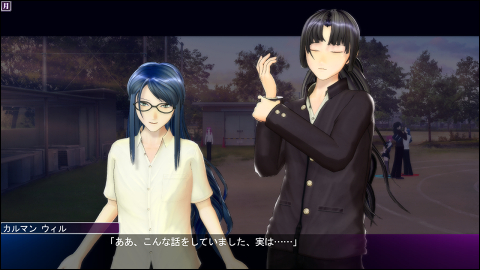
乙女ゲーですね！！
･･･いいえ、男性向けの18禁エロゲです。
(´・_・`)！？
なのですが、レアさんは乙女ゲーとしてプレイしています。
(´・_・`)！！？
･･･というわけで今回はまさかのエロゲの紹介になってしまいますが
記事自体はきっと全年齢なのでよい子もどしどし見ていけばいいと思うよ！！
まあそうでなくとも今時律儀に年齢制限守ってく未成年の方が珍しい気がするんですが（丸投げ）
上記理由で男性向けのゲームだけど主に女性向けの記事です。どうしてこうなった。
「ジンコウガクエン２」 なる今回のPC用ソフト、
本来学園物マジで苦手マンであるレアさんが睡眠時間削ってやり込んでるくらいなので
なかなか類を見ないタイプのゲームだったりするんですが
内容そのものは至ってシンプルでありまして
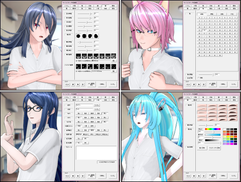
キャラメイクで自分好みのキャラクターを
外見・性格・好みまでごねごねしながら作って、
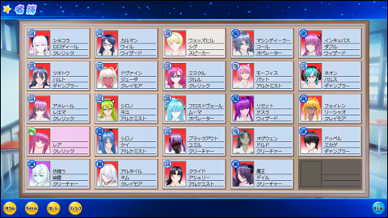
作ったキャラを適当に詰め込んでクラスを編成して、
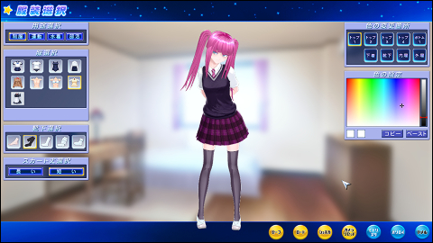
ついでにレアさんもぶち込んでメンバーの服装やら色やらいじって、
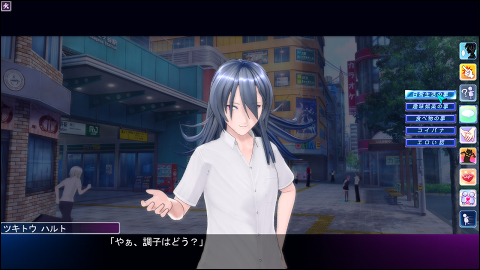
後は学園内外を自由にふらふらしながら
クラスの皆さんと交流して遊ぶだけ！やったぜ！！
･･･ネタばらしをしますと、要はこのゲーム
女の子をいっぱい入れたクラスを作って男キャラで攻略していく（最も王道を行くプレイなら）
というのが本来想定されてる遊び方なのですが、クラス編成に制限が無い事と
性別関係無くどのキャラでもプレイヤーキャラクターとして選べてしまう事を利用して
女プレイヤーで男キャラを攻略する逆転プレイが出来てしまうのです
しかもキャラメイクではほとんどのパーツが男女共用なおかげで
上の
頑張れば普通に作れてしまうという･･･
でも、問題は女プレイヤーでどこまで遊べるかですよね。
これあくまでメインターゲット層男性のゲームですしおすし。
そもそもレアさんがこのゲームを知ったのは偶然表示されていた広告バナーからで、
ちょうど「男もカスタマイズ出来るで！」という謎の宣伝がされていたので
え、何それはと思いつつホイホイ付いていってしまい色々調べてるうちに
追加ディスクも入れると 長髪 で 敬語 のお兄様が攻略出来るっぽい事が判明してしまったわけで
後先考えずその日のうちに全部入りのDL版を買いましたよね
･･･これを単なるアホと呼ばずして何と言うのか。
ぶっちゃけこの段階では自分の考えるような遊び方では流石に出来る事少ないだろうなぁと思ってましたし
もう長髪で敬語なら何でもいいや（暴論）的な半分投げやり購入だったんですが。が。
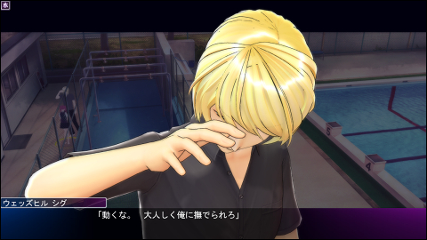
蓋を開けてびっくり、これが予想を遙かに超えた神ゲーだったのだ･････(◜◡◝)・∵.
つまり挨拶はもちろん日常会話から勉強やデートのお誘いやスキンシップ、
更にはこういう記事書いてるとうっかり忘れそうなんですが一応これエロゲなので
あらぬ場所に連れ込んで色んなことも出来ます。やったー！！
ゲーム進行は全体的にシームレスな感じで、
リアルタイムに時間が進むので誰かに会いに行く途中で別の人に話しかけられたり、
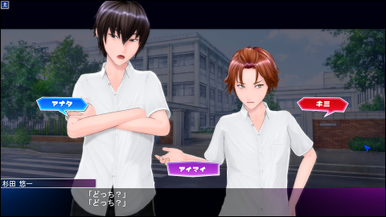
予めシナリオが決められているゲームと違って
誰と、何人と、何をしようがプレイヤーの勝手であり
NPCの性格によっては嫉妬されたり仲を妨害してきたり、争奪戦を仕掛けてきたりします
個人的に取り合いシチュが死ぬほど好きなのでこの辺は本当マジで楽しいです･･･
ちなみに上のSSはデフォルトで同梱されてるデータのお二人ですｗ
周りの人達が接するのはプレイヤーだけでなく
NPC同士でも勝手に人間関係が構築されていくので「見てるだけプレイ」も可能
この辺はSimsシリーズとかなり似てる感じですね（知ってる人いるかな）
なおこのブログ的には無縁ですがこのゲーム、条件次第で同性愛も発生します。つまり･･･？
とまあざっくりそんな感じなのだよ！！！！
仕様上、ストーリー性は皆無で台詞も短くまったりだらだら進めてく感じなので
一本道が好きな方にはおすすめ出来ませんけど逆に合う人はとことんハマると思います！！
何がってNPCの行動AIがやたら人間くさいというか、リアルな動きしてくれるのですよ
実際プレイし始めて最初の感想はまあまあだったのに女の子達に話しかけられて無駄に感動し
なんとなくデフォルトの蛮にちょっかいかけてるうちに気に入られ泥沼にはまってしまい
いつの間にか死ぬほどプレイしていた、そんなゲームです（白目）
こんなの今まで見た事無いぜぇ････あればむしろ教えて下さい･･･_:(:3｣ ∠):_
制限解除と各種MOD、少々の独自改造を導入済のデータですのでご了承下さいませ･･･！
ぶっちゃけ自分以外にこのゲームで乙女プレイしてる人とか一人も見当たらないんですけど！！
ここはわけ分からなさに定評のあるレアさんのブログなので容赦無く書かせて頂く！！！
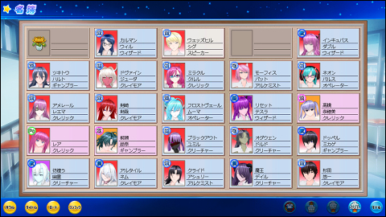
現在メインで遊んでる全体的にごっちゃりしたデータだよ！クリック拡大！！
版権キャラも結構作ったんですが混ぜると浮きそうだったのでほぼオリジナル軍団です(◜▿~ )
･･･花については後ほど説明しようじゃないか。
暫くずるずるとデフォルトキャラ達＋αのクラスで遊んでるうちに
オリキャラが溜まってきたので新データに詰め込んでみたところ（記事上の方のSSの状態）
実際動かしてみるといまいちパッとしなかったりキャラが被ってたりしてたので
一度数人外してデフォクラスで仲の良かった数人やらダウンロード枠を連れて来ています
まだまだリアル評価が「だれ？」な影薄組が多くて色々とダメデータなんですが！！
オリジナルで満足出来るクラスを作るのは難しいね･･･！
女の園だったら性格が多いので割と何も考えなくてもそれっぽくなりそうなものですけど
そこはまあ仕方が無い･･･無印から男性格が移植出来るだけでも有難い事です
ちなみに部活の名称は散々悩んだ結果ファンタジー職業風にしてみたら
いい感じにマッチして気に入ってたりします（デフォ組に馴染んでないのは気にしてはいけない）
謎クラスのメイン人物達
（ゲーム内の名前表記は姓が先）
レエマ・アメレール
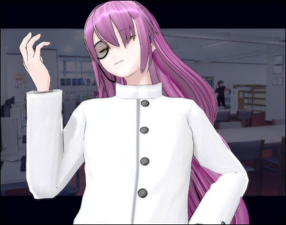
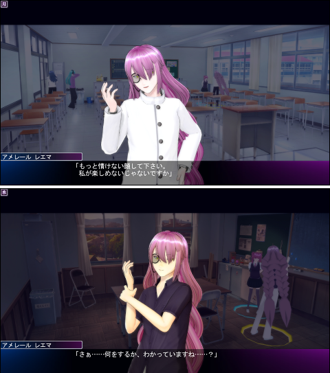
腹黒、一途、心の闇
レアちゃんの学園公認ベストパートナー（本人談）
ふんわりした薄紫の長い髪と穏やかな話し方が特徴。
露骨に機嫌を損ねたり他人との会話に割り入ってくる事は少ないものの
誰かに呼ばれて付いて行った時ふと周りを見ると必ずどこからか様子を伺っていたりする。こわい。
一見すると仲睦まじいように見えるのだが、何かに付けて命令に従わせようとする傾向が強く
彼の愛情は相手の事を思いやるというよりかは自分専用のお人形を愛でている感覚に近い。
一緒にいる時以外に何をしてるのかいまいち印象が薄く掴めないので後を付けてみると
どうやら実際他人とはほとんどまともに関わっていない模様･･･
付き合いが悪く皮肉が多いためか周りからはあまり良く思われていない様子。
特にシグ先生には何故だかめっちゃ因縁付けられている。
シグ・ウェッズヒル
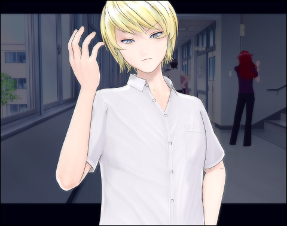
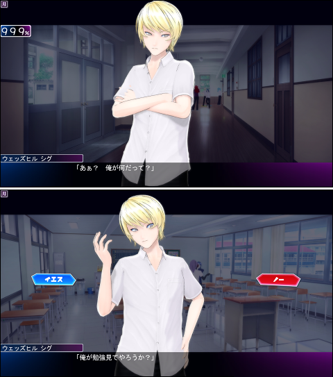
口が悪くぶっきらぼうな態度を取る反面、仕事は優秀でしっかり者なので生徒どもからは慕われている。
･･･が、いかんせんこの男、本性はサディストである。
気に入った相手を力で捻じ伏せ痛め付けて無理やり屈服させるのが好き。
一度弱みを握られでもすればその事を餌に執拗に追いかけ回してくるためにたちが悪い。
恋愛沙汰には全く無関心なつもりでいるが、
手当たり次第に嫉妬心を燃やす様がそれに酷似している事に当人は気付いていない。
アシュリー・クライド
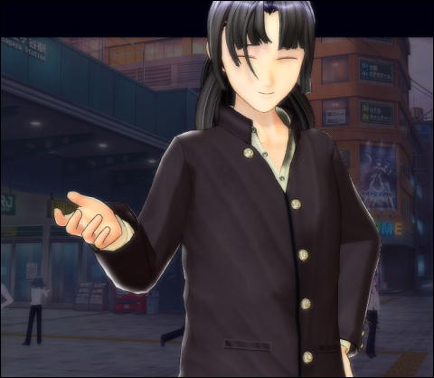
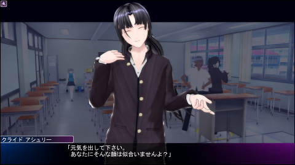
ぽややん系瞑り目のお兄さん。背が高い。
常にまったりおっとり自分のペースを貫いていて何を考えてるのかよく分からない。
落ち込んでいる人がいるとどこからともなくふらりと現れては励ましの言葉をかけて去っていく謎の人。
喧嘩区域と化した状態でも彼がもめ事を起こしている現場は特に見かけない。事なかれ主義のようだ。
甘やかして可愛がりたいタイプらしく、気に入られるとおいでおいでを多用してくるなでなで常習犯。
度々彼のいい噂が流れてくるところを聞くに悪い人ではなさそうだが･･･
誰に対してもニコニコしていて人当たりは良いものの、
聞き耳を立ててみるとたまにすっとぼけている。ちょっと胡散臭い。
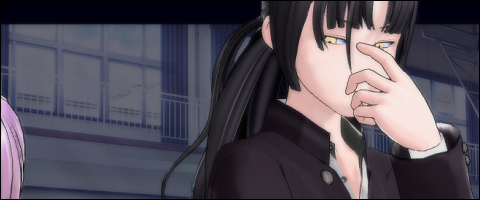
･･････ん･･･？
ウィル・カルマン
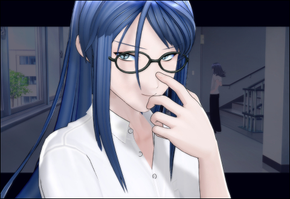
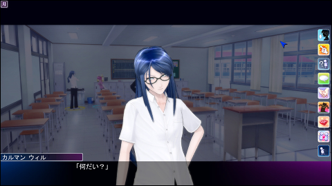
みんなのメガネ委員長。声が低い。
予想を裏切らない真面目っぷりで必ず朝早くから登校していながら
せかせか校内を見回ってはメンバーの様子を気にかけたり色々と取り締まったりしている。
悪口学園になりかける中、分け隔てなく接し中立的な立場で仲間外れになりがちな人達を立てて回る。
おそらくは謎クラス内でも最も顔が知れており、概ね評判の安定している人物。
怒らせると怖いかもしれない。
貴重な常識人なのかと思いきや、先日呼ばれて付いて行ったところ
裏通りに連れて行かれてセクハラされたのでやっぱり何考えてるか分からなかった。
え･･･大丈夫なのかこのクラス････（大丈夫ではない）
なお暴力的ではないはずなのだが、ウィルには今データで唯一殴られた事がある。
心当たりが全く無かったので腹黒組に妙な噂でも流されたのだろう･･･(⌒∇⌒)・∵.
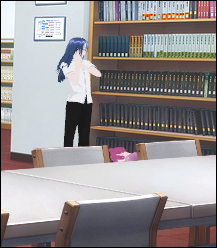
その場にうずくまるレア氏の図
我々の業界では（略）
委員長からは少し逸れるんですが
まじめな話、腹黒でも恋人関係になると罵らなくなるのは色々ダメだと思ってるので（ドM並感）
好感度が高い場合に専用台詞で罵ると殴るを使ってくる「S気質」みたいな個性が切実に欲しい人生だった
あとツイテコイの実装をですね･･････！！
剣崎 剣哉
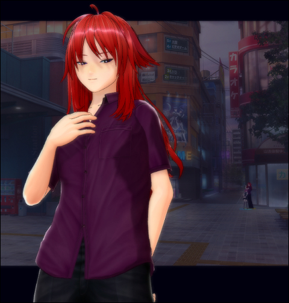
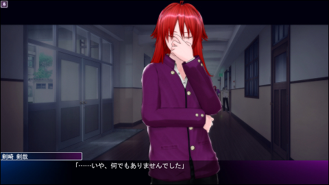
謎クラス唯一のダウンロード枠のツルギサキさんです！
入れ替え時に全員オリジナルでは似たり寄ったりな雰囲気になってしまいそうだなぁと思い
公式アップローダーを眺めていたところ好みだったので有難く頂いてきました！作者様に感謝！！
知力体力社交性最大のチート性能に高貞操、という男ではあまり見ない組み合わせが面白そうだったので
プロフィールの事情もあってそこはいじらずそのまま投入しています。ちなみにキラ。
ただ現在転入生に対する周りの評価が設定の問題でほぼ変動してない状態（後記）なので
人付き合いの面で本来のキラの効果が発揮し切れていないと思われるのが悔まれます(´・_・`)
彼は相当お気に入りなので近いうちに何とかして素のままで動かしたいですね･･･！
転入生でありながら謎クラス屈指の優等生。
あらゆる難題を悠々とこなし、売られた喧嘩も軽く倍返しするため勝利数は驚異の30超え。
噂を聞きつけヤバさを悟ったのか剣崎転入当日、まだ一言も交わしてないのに
レエマさんには「ヤツと関わるな」といきなり理不尽な忠告をされる始末。
そんな状況なのでまあキラ入れた事ないし暫く様子を見るか～と思いながら放置していたら
妙に向こうから話しかけられ、数日後にはクラスの幽霊からこんな事を耳打ちされる。
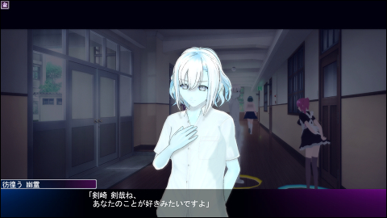
えー･･･
何でいきなり気に入られたのかは未だに謎なんですが
ツルギサキさんに甘やかされて調子をぶっこき始めたレア氏は忠告を無視して
勉強見てもらったり爪先立ちでなでなでしに行ってるとかなんとか･･･。
そして日々やたらと褒めちぎられている気がする。
彼の事を快く思っていない輩に対してはやや好戦的な様子が見られる反面
こちらに対する言動は至って友好的であり、好かれてる割に特に手を出そうとしてくる気配も無い。
敵に回すような事をしない限りは策4人の中で最も紳士的な好青年に見える。
･･････が、ちょっと待ってほしい。
何か忘れている事は無いだろうか？
そう、プロフィールである。
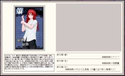
（クリック拡大）
なんてこった。
･･･ここまで読めばお分かりかと思いますが、
ツルギサキさんは、そう、闇持ちです。
正直このプロフィール見た時作者は天才なんじゃないかと思いました。
感情を押し殺している様を表現するために高貞操を使うなんてロックすぎる･･･！！！
外見でピンと来て更にこんなの見てしまったら一発採用する他ないじゃないですかやだー！
ちなみに謎クラスのツルギサキさんはカード画像更新のために一度開いて保存し直しているのですが、
その際他と統一するため対象を異性のみへ、そして制限解除未使用だったので個性2つの状態から
プロフィールの「決して相手を裏切ることはない」という一文に合わせて一途を追加しています。
最近ツルギサキさんについて気付いた事がありまして、
ものすごく後を付けられています。
ロコツに付けられています。
キラ特有の超絶スピードで常に追いかけてきてはこちらを見ています。
話しかけられた瞬間容赦なく割り込んできます。この人レアちゃんのお付きか何か･･･？（震え声）
レエマさんがいつの間にかそこにいるタイプの虚ろ系ストーカーだとしたら
ツルギサキさんの方は誰が見てもあからさまに付き纏ってます。完全に開き直っている･･･！
しかも外野同士がモメている隙にニコニコと連れ出そうとしてくる頻度がやたらに高い。
周りから見るとかなり厄介なタイプの様子。
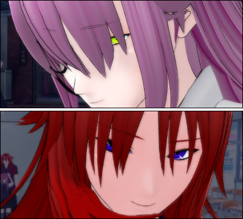
ちなみに、ツルギサキさんの目にはハイライトが入っています。
自作キャラどもが全員デフォルトでレイプ目仕様なので最初は見慣れなかったのですが
逆に言うとそれは消えた時に･･･
もしここを見てツルギサキさんを気に入った方がいましたら
公式キャラアップローダーを 新しい順・策のみ 検索で1ページ目に出るはずなので是非！
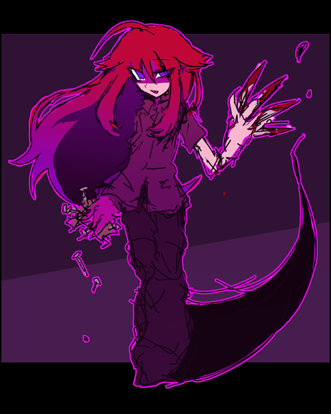
好きすぎてこの記事書いてる合間に落書きしてしまったなど
勝手にここまで持ち上げていいものか疑問は残る･･･_:( _`ω、):_
メインってほどでもない人達
高橋 奈穂美
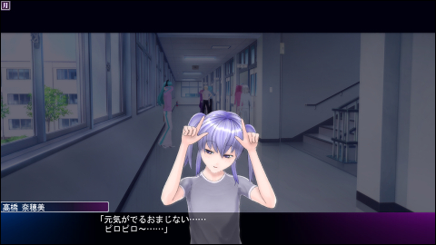
デフォルトクラスから連れてきたお友達。通称淡子ちゃん。
やはり女の子枠がいると野郎だけのクラスとは和み感が段違いである。
物静かで愛嬌のある、個人的全性格中のなでなでしたくなるナンバーワン。
親友である彼女と遊んでる間はストーカー達もさすがに空気を読むのか
大人しくしている事が多いが、シグ先生辺りは結構平気で割り込んでくる。大人げない。
レアちゃんと並ぶとクラスのチビッコ組が出来上がる。
ネム・アルタイル
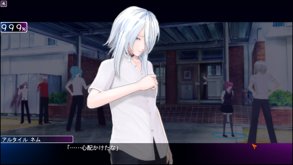
前作移植性格である狭のお兄さん。でかい（小並感）
モブ位置だったはずなのだが見た目と性格が妙にマッチしてしまいそこそこ気に入られている。
独特の低い声に無口で、何か話しかけてくる時も最低限の一言しか喋らない。
大きくて大人しい野生動物のようなイメージ。地味に懐かれている。
パット・モーフィス
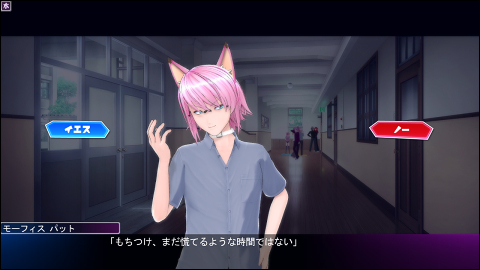
みんな大好き宅大先生。アルケミストだけど魔法使いを目指してるらしい。
放課後には「みんなでオヤツを貪るべし！」と険悪ムードに積極的に活を入れ
通り抜け様に爽やか青年の提案を「いやでござる！」と一蹴しては草を誘発し
腹黒に無理やり男子更衣室に連れ込まれセクハラされているのを目撃された日には
「おふぅ！？」と奇声を上げそそくさと立ち去っていく。
宅のいないガクエン２など最早ガクエン２ですらないのだ。
ちなみに何気に喧嘩仲裁率が高い。めっちゃいいやつ。
彷徨う幽霊
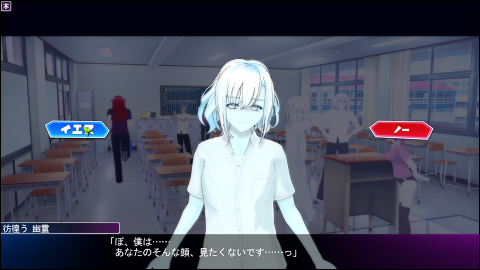
前作移植性格である軟の幽霊。名称不明。
建物に住み付いていただけで正確にはクラスの一員ではないのだが、
誰からも受け入れられやすい素直な性格と人当たりの良さで自然と場に馴染んでいる。
やや幼い外見をしており、控えめかつ謙虚な姿勢でクラスのみんなを影からサポートしている。
ついでに声も可愛い。いわゆる天使。
おまけで
レアさん
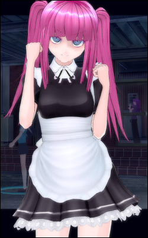
ついでにぼくだ
豆腐精神・奔放・M気質・弱み・心の闇！
プレイヤーらしくキラですが前データで色々と面倒だったためチャームは無し。
レエマさんに嫌われたら生きていけないので自主的に浮気はしない方向。あくまで自主的には。
ちなみにほんとのレアちゃんは髪がお尻くらいまで長いのですが
制限解除で無理に伸ばそうとすると表示の度にモーションがｳｫｱｰｰｰｯってなるので妥協しました。
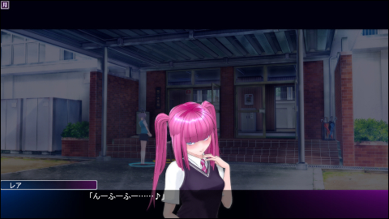
髪の長いお兄様に甘えに今日も世界を渡り歩いていく！！（完）
・MODについて
SSに何度も登場してる学ランやメイド服はJS3 FICTIONS様から頂いてきています！
このゲームの改造界隈で有名な方のようで服以外にも特殊なMODの配布や
ハイレベルな解析関連の記事を公開されてらっしゃっていて素晴らしいです･･･！
実は性格移植用に前作を買った所そちらにもはまってしまい、２で無印顔を再現したく思ってたので
同ブログのスペシャルゲスト男版とスライダーボディにはこっそりと大期待しています_:( _`ω、):_
それから同社他作品から男性用の白衣を移植したという記事のSSを見て軽く発狂しかけた末に
プレイするわけでもないのに釣られて移植元のゲームを買ってしまったなど･･･
調べた感じ他にも良さげな服が入ってるらしく上手く持ってこられたら最高なんですけど
レアさんにも出来るかな･･･！！？（無謀）
ちなみに着衣きゃらめいくとキャラカードはMODではなく、
しょぼいですがあちこちで情報探して試行錯誤しつつの自力改造をしています。
マッパのカードは個人的にどうしても許せなかったんDA！（白目）
改造については記事末でもちょっぴり触れてたり。
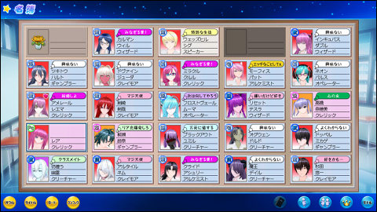
クリック拡大な現在の好感度事情。安心の宅。
メイン人物以外からもぽちぽち気に入られてるのは
まあキラだからこんなもんかな･･･という感じなんですが実際ちょっと引っかかる部分がありまして
プレイ開始から暫くは特に周りからなんやかんや言われる事は無かった気がするんですよね
ところが、転入生が来たその日からいきなり外野に話しかけられる頻度が増えたような･･･
実は入れ替えで女の子を追加するにあたって、
ただでさえPC肯定返答常時オン（0%は失敗する）な程度の甘ったれなので
ドロドロにならないようにオプションでNPC同士好感度変化率をゼロに切り換えてまして
もしかしてその影響でNPC同士で変動しない分自分に向くようになったのか･･･？ と思ったものの
白評価の人達とは相変わらず全くと言っていいほど関わり無いままですし
PC↔NPC系の設定の方は一切いじってないので普通に考えたら関係無いだろうし謎なんですよね
NPC同士の好感度変化率変えたらPCが好かれるようになった話も特に見付けられませんでしたし
もし設定が関係無いとなると転入生の誰かが何かしたという事になってしまうんですがそれは･･･
（ツルギサキさんの方を見ながら）
ただ上の方でも言った通り、
好感度不動オプション入れてると本来の人間関係の流れが出来ないので
そのまま進めていけば嫌感だけ募って地獄絵図必至な事もあって出来れば使いたくない所なのです
しかしそうするとお友達枠がライバルになってしまうわけで両立出来ない････うーーむ
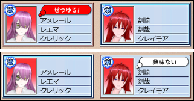
ツルギサキさんのヤバさがよく分かる一枚
どっちみちこのデータではレエマさんに嫌われたくないために
何だかんだで他の人とあんまり遊べないような気がしてますし（ぶっちゃけこんなはずではなかった）
完全なる逆ハークラスでは他のカップル関連の台詞や「俺達もするぞ」が聞けない事に今更気付いたので
せっかくなら一つのデータに絞る事はせず色んな組み合わせ試して遊んでみたいですね
俺達も～は最初言われた時二次元に生きてる感半端無くて正直早々に灰になるかと思いました
あああァ～～～～策･･･策に言われたい････
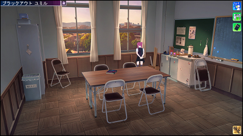
お約束（？）のお気に入りまったりポジション
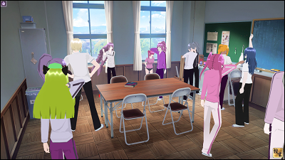
って暑苦しいわ！！
クソ狭い部屋に集まってきすぎｗｗｗｗｗｗ
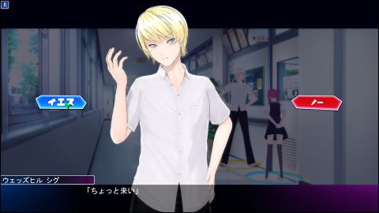
蛮の「ちょっと来い」の言い方が有無を言わさない冷たい口調で
ぞくぞくしてとても好きです
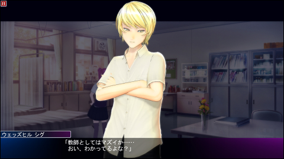
分かってるよな？（脅迫）
ちなみにシグ先生にからかい半分で自分の事を好きか聞いてみると
こんな素晴らしい反応を返して頂けます。
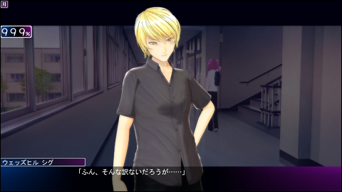
ツンデレつよい（確信）
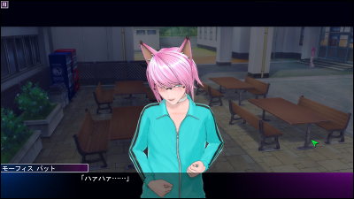
･･････。
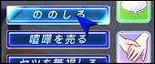
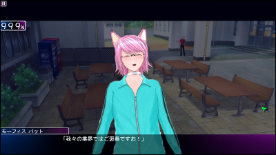
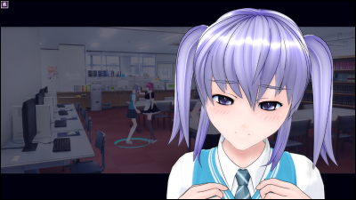
淡子ちゃんなでなで･･･
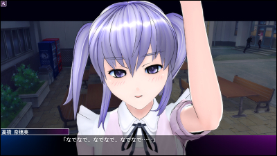
･･･してたら負けじとなで返されました_( _`ω、)_
なでなでと言えば、キャラ紹介でも書いた通り
瞑り目お兄さんアシュリーさんの必殺技なのですが
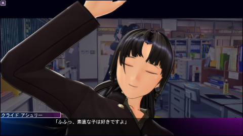
そもそもこのアシュリーさんはオリジナル軍団ではかなり後の方に出来た人でして
何を隠そう自分がニコニコ目大好き人間なので、最初にきゃらめいくで瞑り目顔を見た時
「瞑り目があるのに何故ニコ目が無いのか！！」とブチギレて以来ずっとスルーしてたんですね（ひどい）
そのうち瞑り目の存在を忘れた頃、なんとなくダウンロードしたクラスのメンバーを見ていたら
ニコ目の策が･･･
えっ？こんな顔ありましたっけ？ ンンンﾞ！？！？
転がりながらもう一度きゃらめいくを開き確認してみると
そこでようやく普段( ˘-˘ )の瞑り目が表情によって(^-^)になる事に気付いたので
俄然テンションが上がってアシュリーさんは生み出されたわけです。おわり。
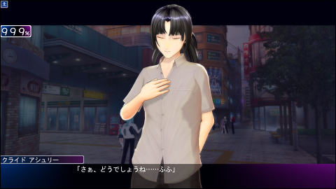
何だかんだで瞑り目というだけでニコニコじゃなくても一際目立ってますし
マイペースぽややん系というキャラ付けがよく似合っていて我ながら好みな感じに出来たので
それだけでもアシュリーさんは謎クラスにおいて確たるポジションを獲得していました。
でもやっぱりどこか胡散くさい。
そうこうしてるうちに事件は起きたのだ
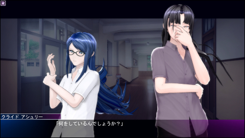
おっ、アシュ･･････あれ？
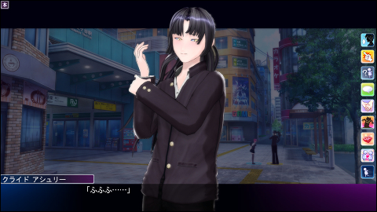
えっ･･･
瞑り目は、
恒久的なものでは
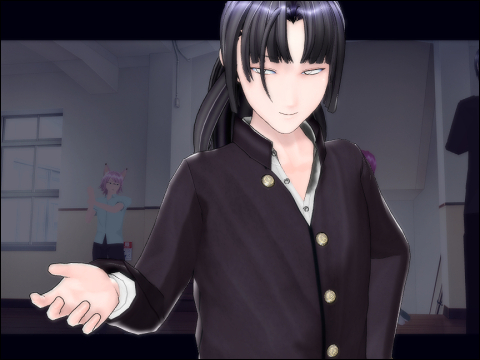
なかった･････････
想定外のギャップに焦る自分。
加速し続けて止まらないロマンティックと胡散くささ。
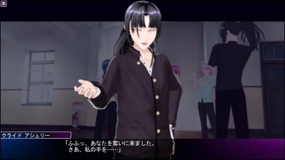
アアアアアﾞ見るからにやばい感じがしますね！！！
これは確実に手を取ったらアカンやつだぜ！！（後に割り込み入る）
無駄に細かい所にこだわりたいタイプなので、アシュリーさんを作る時に一度普通顔にして
本編には一切反映されないつもりで目の設定をしていたのがまさかここで活かされようとは･･･
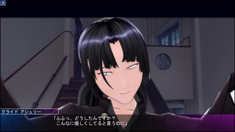
ふじこ
なおアシュリーさんには特に黒も闇も付いていません。それでいてこの効果。
この件が発覚して以来アシュリーさんが更にお気に入りになってしまった事は言うまでもない
暇な時に、なんとなく公式のクラスアップローダーから
気になったクラスを落としてプレイする事もなく中身見て遊んでいたら
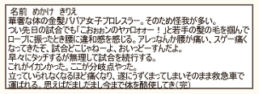
一部のネタクラスのプロフィールが変な方向に凝っててめっちゃﾜﾛﾀ
落としたキャラの方はというと実はもう一人いまして
それは紛れもなく
である
･･･そうです。みんな大好き公式プレイ日記のアイツです。
アップローダーを人気順で見てたらナチュラルに公式から上げられていて
ちょっと面白そうだったのでついでに空き枠に入ってもらってましたｗ
お、おう･･･（やらない）
予想を裏切らない働きっぷりに初日から笑ったｗｗｗｗまさに日記そのまんまの印象である
高社交低貞操の腹黒組ですらこっちのデータでヤラセロしてきた事ないというのに(⌒∇⌒)・∵.
やっぱり蛮なのがでかいのか･･･いやむしろもうこの人特有の何かがあるのでは･･･
と疑いたくなるレベルで路上だろうが周りに誰がいようがごり押しを続けてくる日記の人。
どうやらエロゲの主人公になるにはこのくらいの度胸が無いとダメらしい。
色々と不憫な目に遭ってるのでいい加減ちょっとアクション入れようと
大勢が見てる時に「やってやるぜ～」みたいな段階での中断前提で一度イエスを選んでみる
（何度も言うがやってはいない）
／ギエェーーヤメローーーー＼
即刻ブチギレて中断に入るレエマさん
この段階で見ていた人達からの反応。そりゃそうなるｗｗｗ
設定の件があるとはいえ同時期に入った蛮と女の子達は特に周りに悪く言われてないので
やはり色々と普段の行いがマズかったのだろう･･･
あっ･･････（察し）
翌日から日記の人に尋常でなく付き纏い始めるレエマさん
一体何をしてるのかこっそり聞き耳立ててみると
虚ろな声で「これ以上は分かっていますね･･･？」的な事をひたすらブツブツ繰り返している様子
これこそが、出すぎた真似をするようであればキサマの未来はにい、という心の闇の最終警告なのであるが
一切ブレる事のないヤラセロであった。お前というやつはｗｗｗｗｗ
エロゲの主人公になるにはこのくらいの度胸が無いとダメらしい（二度目）
唐突に上がる悲鳴。
かくして彼の机には花が飾られる事となった･･････
フラグが立った地点で転校させてもよかったんですが個人的にどうしても一度例のアレが見てみたく
状況的にレエマさんが退場してしまってもまずいので後から強運外してしまいましたてへぺろ
日記の人には申し訳無い事をしたと思っている！ほんとだよ！_:( _`ω、):_
別に何も恨みがあるわけじゃなく日記の人自身はむしろいい味出してて割と好きですし
（地味にイケメンである事も忘れてはならない）腐っても強運なのでそのうち復活するかもしれません。
あくまでどうなったかは説明されない所が後々再投入してもあまり違和感無いように出来てる･･･のか？
誰かが言ったように放置してたらそのうち帰還するパターンがあっても面白かったと思うんですけどねｗ
･･･せっかくなので、ご臨終前のデータを読み込んで
日記の人視点で事の顛末を追ってみました。お約束のやつです。
ガクエンを知らない人（が果たしてここまで読んでいるのかはともかくとして）向けに説明すると、
このゲームはプレイ途中でも自由にプレイヤーキャラクターを切り替えるられるので
他キャラを使って印象操作したり、周りの人間関係を他人視点から覗く事が出来るのですね
淡子ちゃん視点から見るとこの通り(╹◡╹)
というわけでこれを利用して日記の人に憑依。
レエマさんどころか周りの人達までめっちゃ罵ってくるので若干気の毒になり始める。
そのうちレエマさんがそこそこ普通な感じを装って魔のお誘いをしにやってきます
二つ返事で了承。
次の時間、無人の教室で言われた通り待っていると
ものすごーーーーーくゆっくりと明らかにおかしい雰囲気を漂わせながら
一歩一歩こちらに近づいてくるレエマ氏
あれ･･･？ ひょっとしてこれやばいのでは？
と気付き始めた頃には既に手遅れだったのである
おまけという名のノロケSSです。
一応言っておくと、これ、あくまでこういうゲームですからね！！！！
キスくらいよい子の漫画雑誌にいくらでも載ってるので大丈夫でしょう（すっとぼけ）
レエマさんのトロ顔の破壊力が半端無いとぼくの中で大評判のこの頃です
ついでに舌フェチでもあるが故にこのゲームは最高すぎた
彼氏自慢のコーナー
レエマさん結婚しよう
それにしてもほんと策が好みドストレートすぎてどうにかなりそうなんですけどだれかたすけて
ガクエンに手を出した理由の8割くらいが策ですし謎クラスでプレイ開始直後は策が素敵すぎて
一人に絞った方がいいのではと一瞬思ったものの実際策が何人いても全員に愛着湧いて楽しいので困る
M気質とか弱みとかサボり魔とかまだ聞いてない台詞が山積みだよやばいよォ･･･
もうこれ策だけで一クラス余裕で作れるのでは（暴論）
ドM的には蛮も雑に扱ってくるので好きですけど蛮は一部優しい部分が見え隠れしていたりするので
やはり一貫して真意不明な余裕の態度を取り続ける策に軍配が上がってしまいますね。敬語だしな。
口調も声も表情もポーズも行動も断トツで策が好きです。どうしてこうなった。
もしガクエン３が出るとしたらそこに策はもういないはずなのでぼくは今から死にたい
というのは冗談ですがイリュージョン様策を実装して下さって本当にありがとうございます･･･
ちなみに移植ではなく無印そのままでプレイした感想ですが鋭もなかなか好きです。
策と鋭は、どちらもライバルとして登場しそうなステレオタイプな性格を志している感じがありますが
個人的にこのゲームの二人の良さのポイントはまさに「女性需要を意識していない」所にあると思うのです
乙女系はそれはそれでいいんですけど時としてわざとらしく甘ったるすぎていやんなっちゃうんですよね
気に入るキャラは決まって個性が飛び抜けていて、現実にいそうな緩いタイプが苦手というのもあります
その点ガクエンの性格達は妙な人間味を持たせようとせずステレオタイプのまま描かれ切ってると思うので
元々は恋愛と関係の無い一般ゲーのライバルや王道敵キャラを散々好きになってきた二次コンとしては
変な補正の入らないキャラクターそのものと色んな事して遊べるのはすごい事だなぁと感心してたりします
あれがダメそれがダメと言いたいわけじゃなくてあくまで歪んだ性癖の個人の感想なんですけども！
上手い事自分の謎の趣味とマッチする良ゲーに出会えたな～的な！！
変態だな･･･（今更）
無印は２と比べてきゃらめいくの幅が狭く、本編中の選択肢自体少ないのですが
何やらその分台詞が細かいらしく「えっここでそんな事言うの？」みたいな台詞が多々あるので
２を気に入って無印未プレイの方がいましたらこちらもマジで強くお勧めしたいです･･･むしろ買うんだ
あと何がとは言いませんが出来る事が細かいです。何がとは言いませんが。
なお鋭はがっつりデレます。
余裕の塊である策と違ってこちらは自分の感情の変化に戸惑うタイプ。
ただし思っている事を否定せず結構ストレートに出してくるのがツンデレとは違う所
プライドが高くて素直系はちょっと珍しいかも？
何かに付けて依存気味と取れるドストライクな台詞吐いてくれるのが素晴らしい･･･
ただやっぱり２に連れてくるとなるとどうしても扱いづらくなっちゃうんですよねぇ
２で追加された行動に対する台詞が存在しない分埋め合わせされてたりとかなり良く出来ているのですが
割り込み時に会話が一瞬で終了する現象が起きたりする辺りはどうも指定ミスな気がしてるので
いつか台詞データがネタバレになりすぎないくらいに遊び込んだら自分でlst開いてみて
気に入ってる鋭と狭だけでも違和感無い程度にいじれたらいいなぁ･･･とは思ってるんですがね！！
いかんせん飽き性なもんで保証は何も無かった(⌒∇⌒)・∵.
究極は音声無しでもいいからオリジナルの追加性格を作ってみたい！
というのはこのゲーム改造してる人ならきっと誰でも一度は思う事ですよね！
えっ･･･女性格は既に充分多いので思いませんか･･･そうですか･･････（死亡）
検索で引っかかったらなんとなく申し訳無いので名出ししませんが
レアちゃんが大好きな例の人をきゃらめいくで作ってみたり
結局素人の腕では右の結んだ髪型使った方がそれっぽくなってしまったとかいうね！！
それでなくとも普段ストレートのお兄さんが一つ結びにすると破壊力爆発級なのでウェルカムですけど！
とりあえず3Dは2Dと違って適当にごねごねしてて出来るものではないという事は分かった（咎め）
彼の髪は描く人によって大分違ったりしていてどこを目指すかにも寄りますし難しいです_( _`ω、)_
髪型追加パックに入っていた絶望ヘアーで遊んでみました
どうやら海外の方作成のMODのようですねヾ(⌒(ﾉ'ヮ')ﾉ クオリティ高いです！
ちなみに前髪改造の方は結構上手く行ったと思ってます！！！！わーい！！！
スーツ持ってきて常に無表情に出来れば本編中も違和感無いだろうか･･･
いややっぱり喋り方で詰むか･･･
しかしコレ、決定的に何が足りないかというと下まつげなんですよ･･････
きゃらめいくがダメでも顔にテクスチャさえ貼れればどうにでもなりそうなもんですが
顔をいじる事については既に別件で試した事がありまして、
／デデーン！＼
･･･という事を一応やってはみたものの
どうやってもゲーム内で読み込まれてくれませんでした＼(^o^)／
顔パーツ（A00_O_kao/S00_O_kao）には
ハイライト用テクスチャ、コントラスト用テクスチャ、肌色のテクスチャ が割り当てられていて
肌色テクスチャに模様を描き込んでみると画像の通りSB3Utility上は表示されるんですが
何か他の設定が影響してるようでゲーム上は全く反映されないんですよね
他パーツからMaterial複製や追加してみたりしてもダメな様子･･･ド素人に詳しい事が分かるわけもなく
（そもそもスライダーで色決めされるはずなのに何故肌色が入ってるのかという段階から分かってない）
何とか方法を探してみようにも前例が全く見当たらないので顔にテクスチャは鬼門のようです･･･ぐぬぬ
最後に、あちこちから色々DLして楽しませて頂いていながら何も上げないというのも何なので
趣味丸出しな上アペンド＋髪型MOD必須（詳しくは同梱れどめ）というゴミ仕様で恐縮すぎるのですが
申し訳程度に謎クラスで使ってるキャラカードを3人分置いておきますね！！！
http://osioki.jp/backup/exp/111_files/jg_chara.zip
アシュリー
個人的おすすめ。
大体上の紹介の通り、甘やかされるの好きな人向け。
投入するのであれば頭の片隅に置いておくと2倍楽しめる。かもしれない。
ハルト
シンプル腹黒。三白眼気味の無難なイケメン（だと思ってる）
彼だけはMOD無しでも特に問題無いはず。付き合うと割り込み魔になる事を前データで実証済み。
外野として流すと特に嫌われてなくとも何かに付けてクズ呼ばわりしてくれます。何でや工藤･･･
持ち物の地獄クッキーが何なのかは謎。
レアさん
人数足りねぇんだよコノヤローと困った時の外野やお友達枠に使ってどうぞ。
イケメン策とくっ付けても楽しいよ！自分がな！（まさに外道）
元データにはキラと弱みが付いてますがモブにするとめんどくさそうなので剥がし済み。
然や肝辺りでもそこそこ合うと思うので適当に面白そうな感じに変えてやって下さい_( _`ω、)_
ソシャゲのお兄様と遊びながらデータをごねごねするのだ･･･